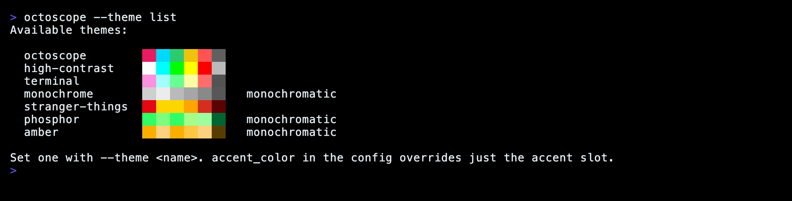

Guide
Themes
Seven built-in palettes, three of them monochromatic. Pick one and octoscope repaints instantly — no restart.
Set a theme on the command line, in the config file, or cycle through them live in the settings panel:
$ octoscope --theme phosphor # 80s green CRT
Preview them without guessing
--theme list prints every palette with a colour swatch and exits — so you can pick one in the terminal you'll actually run in:

terminal is the special one: instead of fixed colours it borrows your emulator's own ANSI palette, so octoscope shifts to match your iTerm / Ghostty / Alacritty theme automatically.
octoscope honours NO_COLOR and --no-color: both force the zero-chroma monochrome palette for that run, without touching the theme saved in your config.
Just the accent
Keep a theme but override its accent colour — hex or an ANSI-256 index — from the config file or the settings panel (,):
# ~/.config/octoscope/config.toml accent_color = "#00F0F0"